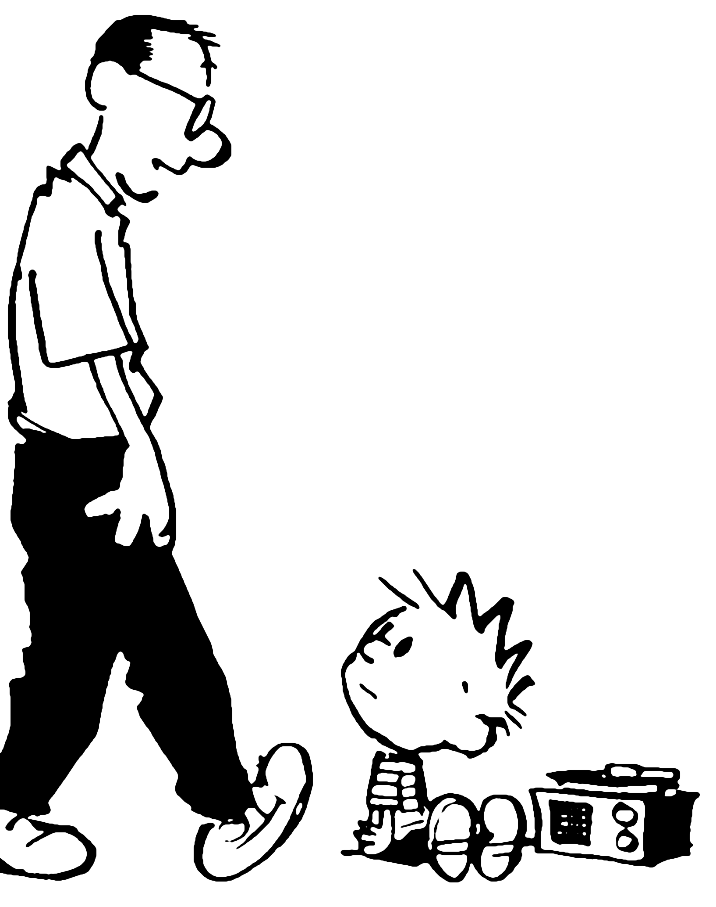
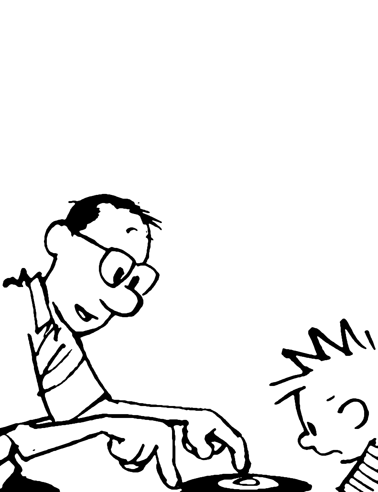
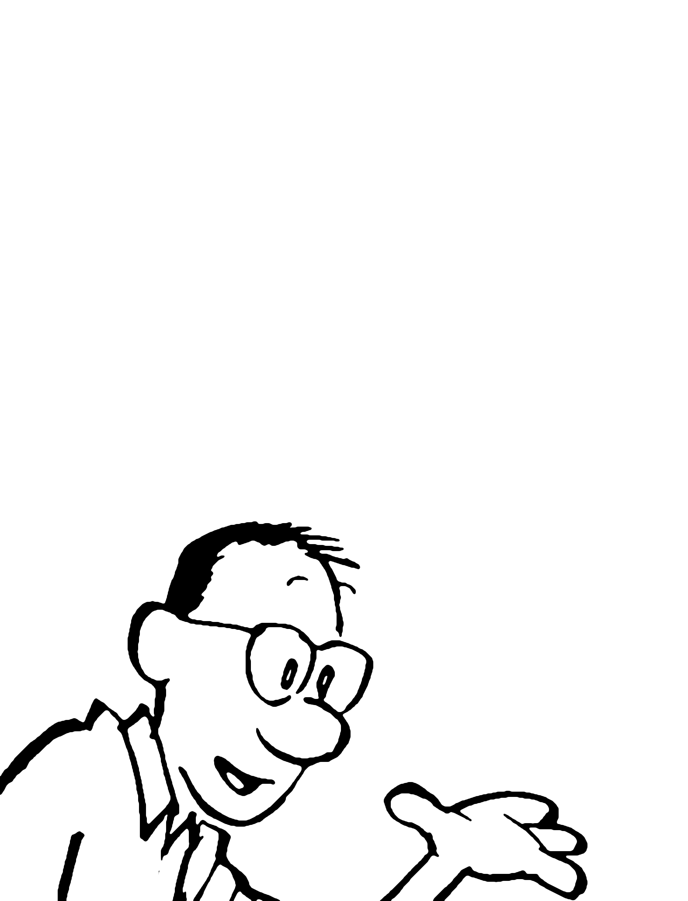
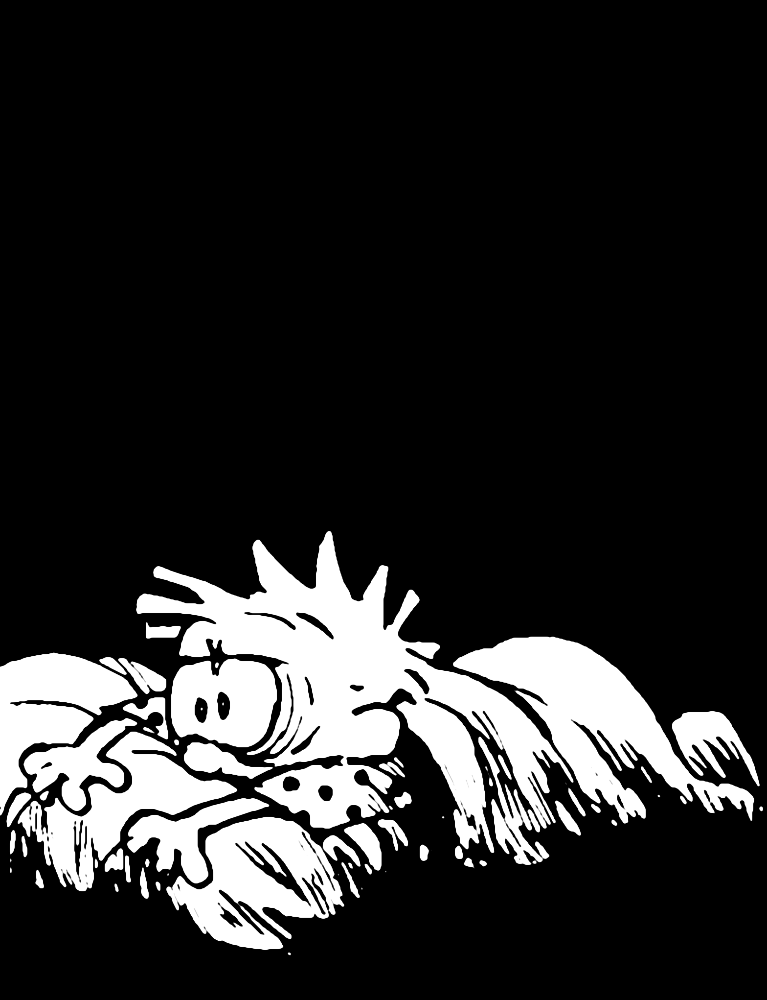

Completed comic panels
All four panels, without dialogue. Use the original-crop overlay to compare the source artwork, or open each PNG at full resolution.
Panel 1
Dad walks towards Calvin. The scan cut off his trailing heel and the back of that trouser leg; they come from a whole-scene drawing by Codex's image generation, fitted to the scan (tools/extensions/graft).
2134 × 2066 pixels · original-crop agreement: 100% · Download PNG · Open full size


Panel 2
Dad kneels and sets the record on the player. Everything outside the scanned crop (his back, legs and shoe, the player, the rest of Calvin) comes from a whole-scene drawing by Codex's image generation, fitted to the scan so its lines carry on from Watterson's. His shoe is Watterson's own from panel 1, mirrored and enlarged to this panel's scale.
3382 × 3060 pixels · original-crop agreement: 100% · Download PNG · Open full size


Panel 3
Dad kneels and gestures towards Calvin. Everything outside the scanned crop (his body below the chest, Calvin and the player) comes from a whole-scene drawing by Codex's image generation, fitted to the scan so its lines carry on from Watterson's. His shoe is Watterson's own from panel 1, mirrored and enlarged to this panel's scale.
3774 × 3660 pixels · original-crop agreement: 100% · Download PNG · Open full size


Panel 4
Original night scene with the existing completed left side of the bed.
2368 × 2042 pixels · original-crop agreement: 100% · Download PNG · Open full size

